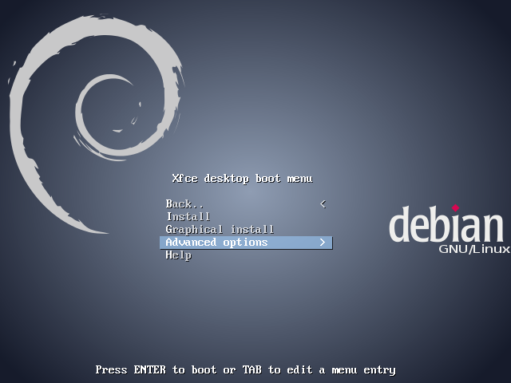
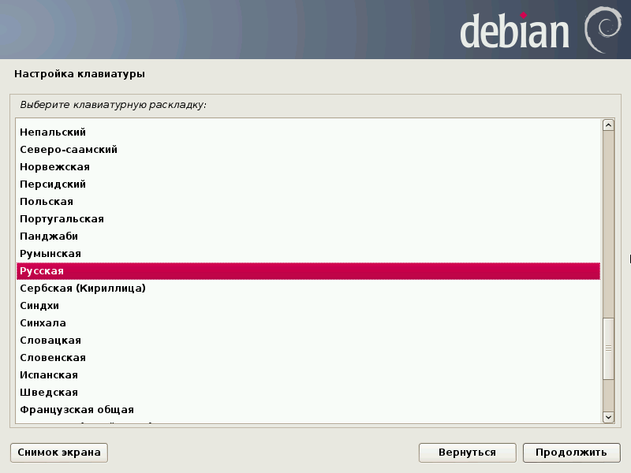
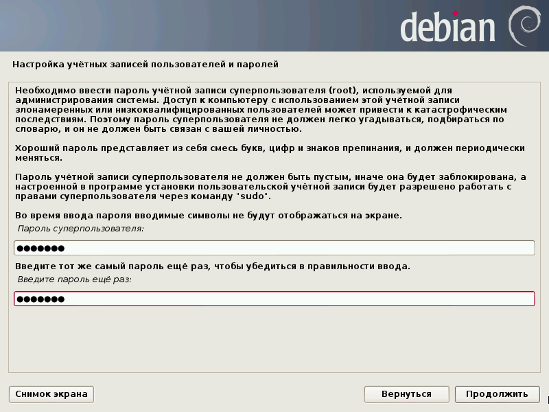
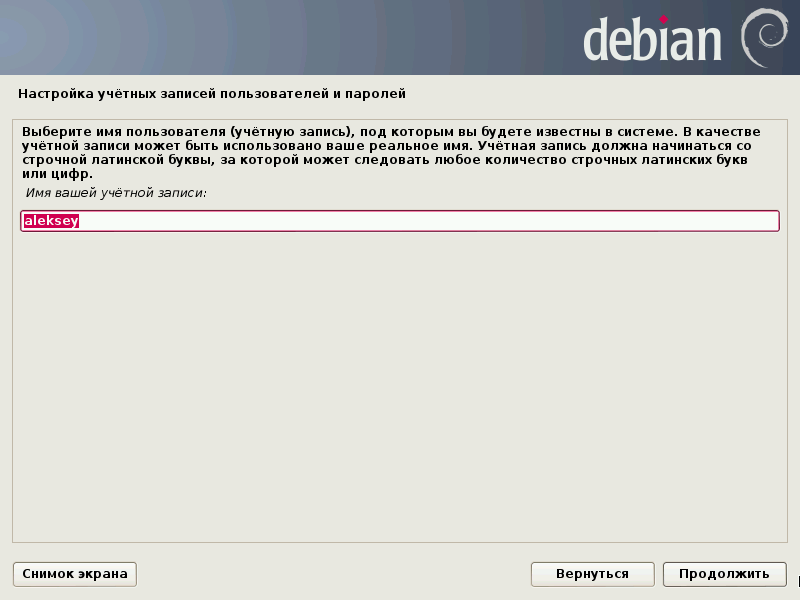
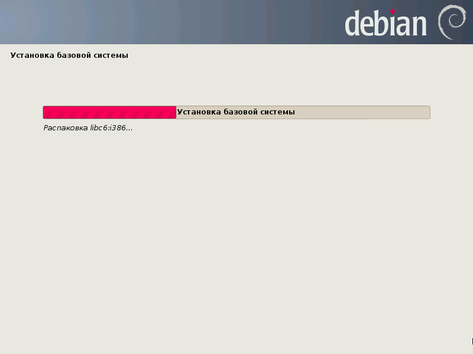
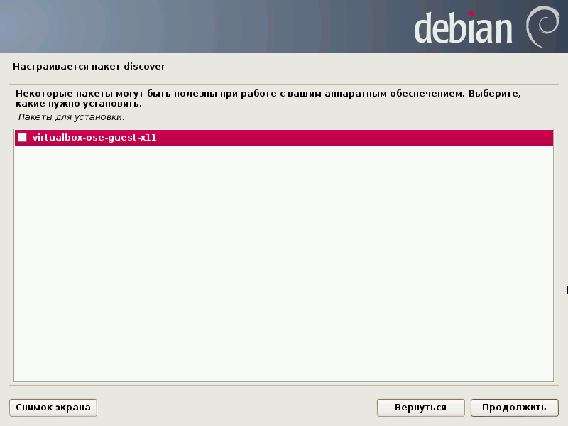

Инструкция по установке и настройке рабочей среды
Введение
Данное руководство описывает процесс установки и настройки рабочей среды для изучения курса "Базы данных". В качестве ОС используется Debian GNU/Linux 7 (Wheezy), СУБД - MySQL, работа в которой проводится как с помощью MySQL Monitor, так и из различных программ на разных языках программирования.
Установка ОС (Debian/GNU Linux)
Текущая версия Debian - Wheezy (7.x).
Для установки достаточно скачать образ netinst CD с любого из зеркал проекта Debian, например, расположенного на Яндексе. Для этого требуется выбрать нужную архитектуру. Для современных ПК это amd64, для 32-разрядных Intel-совместимых процессоров - i386. Последний вариант годится для установки и на современный ПК (при установке в VirtualBox рекомендуется воспользоваться именно данным вариантом ввиду более экономного расходования оперативной памяти).
При установке Debian GNU/Linux следует руководствоваться официальной документацией по установке (предоставляется для разных архитектур и в разных форматах: HTML, PDF, простой текст).
При настройке установленной ОС рекомендуется пользоваться официальным руководством администратора.
Далее установка Debian рассматривается на примере инсталляции версии для архитектуры i386 в VirtualBox.
Создание виртуальной машины
- Установить (в том числе, Extension Pack) и настроить Oracle Virtualbox.
- С помощью Мастера создать виртуальную машину для Debian GNU/Linux, выделив ей виртуальный жёсткий диск объёмом 20 GB и 2 GB оперативной памяти.
- Настроить её следующим образом:
- Общие.

- Система.


- Дисплей.

- Носители.
- CD (пример приведён для использования в процессе установки CD, записанного на оптический носитель). Если загрузка инсталляционного CD будет производиться из образа, то необходимо указать здесь не физический привод, а образ инсталляционного CD.

- Остальные настройки можно не трогать, оставить их по умолчанию.
Установка базовой системы
Для установки требуется наличие соединения с Интернет в хостовой системе.
В VirtualBox выбираем виртуальную машину с Debian и нажимаем "Запустить". Появляется installer boot menu выбираем пункт "Advanced options".
Выбираем "Alternative desktop environments".
Выбираем "Xfce".
Далее "Back..".

Ещё раз "Back..".
Выбираем "Graphical expert install", после чего попадаем в главное меню инсталлятора. На каждом этапе установки необходимо будет выбирать некоторые значения (часто значения по умолчанию вполне подходят) и нажимать кнопку "Continue" ("Продолжить") или нажимать на клавишу Enter. В некоторых пунктах меню потребуется выполнить более сложные действия (ввод данных и т.п.).
Первым пунктом меню является запрос на выбор языка, на котором установщик будет выводить элементы меню.
Выбираем на следующем экране "Russian - Русский".
Выбираем страну: "Российская Федерация".
В качестве региональных настроек (локалей) отмечаем пункт "Российская Федерация - ru_RU.UTF-8".
В качестве дополнительных локалей помечаем "en_US.UTF-8" и "en_US".
Локалью по умолчанию ставим "ru_RU.UTF-8".
Настройка синтезатора речи: выбираем продолжить.
Следующий пункт - настройка клавиатуры.
Выбираем "Русская".

Далее предлагается выбрать способ переключения между русской и латинской раскладками; отмечаем желаемый вариант (например, правый Control).
Следующий пункт - поиск и монтирование CD-ROM.
Далее установщик определяет, какие загружаемые модули необходимы для работы с оборудованием. Соглашаемся с выбором.
Выводится сообщение, что найден инсталляционный CD-ROM. Нажимаем "Продолжить".
Следующий пункт - загрузка компонентов программы установки с компакт-диска.
Выводится список компонентов программы установки, доступных для загрузки. Можно оставить всё по умолчанию, не выбрав ничего.
Далее - определение сетевой карты.
После этого предлагается настроить сеть.
Выводится запрос на автоматическую настройку сети.
Можно ввести максимальный срок ожидания автоматической настройки.
Предлагается ввести имя компьютера (можно оставить по умолчанию или выбрать какое-то другое).
На следующем экране следует ввести имя домена (если дома есть локальная сеть, то можно ввести то имя, которое используется на других машинах).
Следующий пункт - настройка учётных записей пользователей и паролей.
На следующем экране поддержки теневых паролей и учётной записи root следует оставить значения по умолчанию.
Далее предлагается ввести пароль root (дважды). Не следует использовать паролей вида 123456 или слова, которое может быть найдено по словарю. Лучший вариант - использовать пароль, полученный с помощью генератора псевдослучайных паролей. Пароль нужно запомнить, иначе не удастся воспользоваться установленной ОС.

На запрос о создании учётной записи обычного пользователя следует ответить утвердительно.
На следующем экране следует ввести полное имя пользователя.
Далее ввести имя учётной записи.

На следующем экране ввести дважды пароль пользователя. Те же рекомендации по выбору пароля, что и для пользователя root. Не стоит выбирать одинаковый пароль для root и обычного пользователя.
Следующий пункт меню - настройка времени.
Предлагается настроить часы, используя NTP. Можно согласиться.
Адрес NTP сервера можно оставить тот, что предлагается инсталлятором.
На следующем экране предлагается выбрать часовой пояс. К сожалению, выбор там небольшой. Можно выбрать пункт "Москва" (в дальнейшем при настройке системы можно будет внести изменения в настройку часового пояса).
Определение дисков
Разметка дисков
Вручную
Выбор диска
Создание пустой таблицы разделов
Выбор типа таблицы разделов
Выбор свободного пространства для создания раздела
Создание нового раздела
Выбор размера раздела
Выбор типа раздела
Выбор местоположения раздела
Настройки раздела | Выбор файловой системы
Раздел подкачки
Завершение настройки раздела подкачки
Выбор свободного пространства для создания раздела
Создание нового раздела
Выбор размера раздела
Выбор типа раздела
Выбор местоположения раздела
Завершение настройки корневого раздела
Выбор свободного пространства для создания раздела
Создание нового раздела
Выбор размера раздела
Выбор типа раздела
Завершение настройки домашнего раздела
Завершение разметки, запись изменений на диск
Запрос на запись изменений на диск
Установка базовой системы
Процесс установки базовой системы
Выбор ядра для установки
Выбор драйверов для включения в initrd

Настройка менеджера пакетов
Запрос на использование архива пакетов из Сети
Выбор протокола для загрузки файлов
Выбор страны зеркала архивов
Выбор зеркала архивов
Настройка прокси
Запрос на использование несвободного ПО
Процесс настройки менеджера пакетов
Выбор активируемых сервисов
Выбор и установка программного обеспечения
Предлагаемые пакеты для установки
Запрос на участие в опросе популярности пакетов
Запрос на кэширование страниц руководства
Выбор программного обеспечения. Можно отметить указанные пункты или...

выбрать только стандартные системные утилиты. Дальнейшее описание предполагает именно последний вариант (всё остальное необходимое можно поставить позднее).
Установка программного обеспечения
Установка системного загрузчика GRUB на жёсткий диск
Запрос на установку GRUB в MBR
Завершение установки
Запрос на выбор времени в UTC
Установка завершена
Изменение настроек виртуальной машины
После установки базовой системы следует изменить некоторые настройки виртуальной машины.
- Оставить загрузку только с жёсткого диска:
- Заменить в нвстройках Носители инсталляционный CD (или его образ) на образ CD VBoxGuestAdditions:
Конфигурирование системы и ПО
Заключение


")